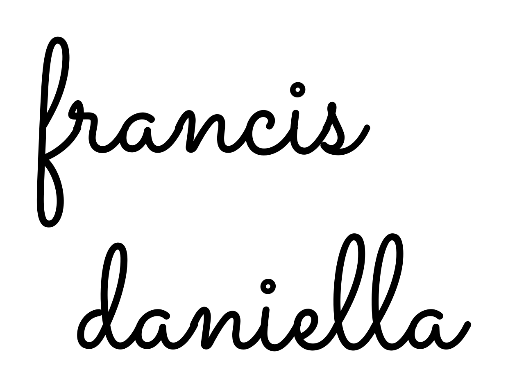

Logo manuscrito · francis daniella
Dos composiciones de la misma dirección, en minúsculas.
1 · Apilado

SVG vectorial · PNG transparente


2 · Horizontal para el encabezado

SVG vectorial · PNG transparente
Dos composiciones de la misma dirección, en minúsculas.

SVG vectorial · PNG transparente
SVG vectorial · PNG transparente